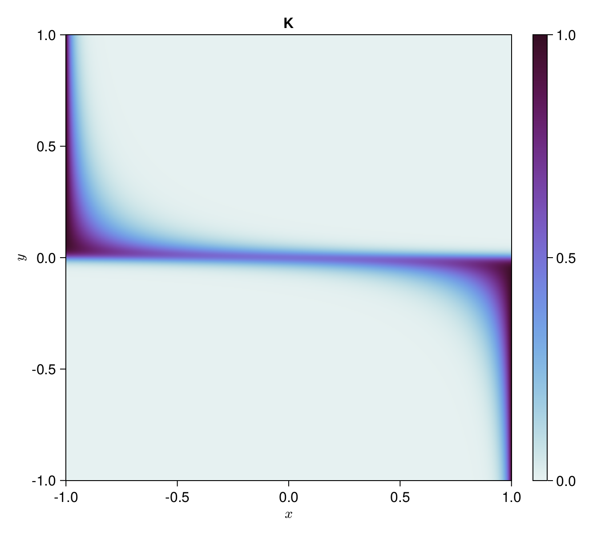
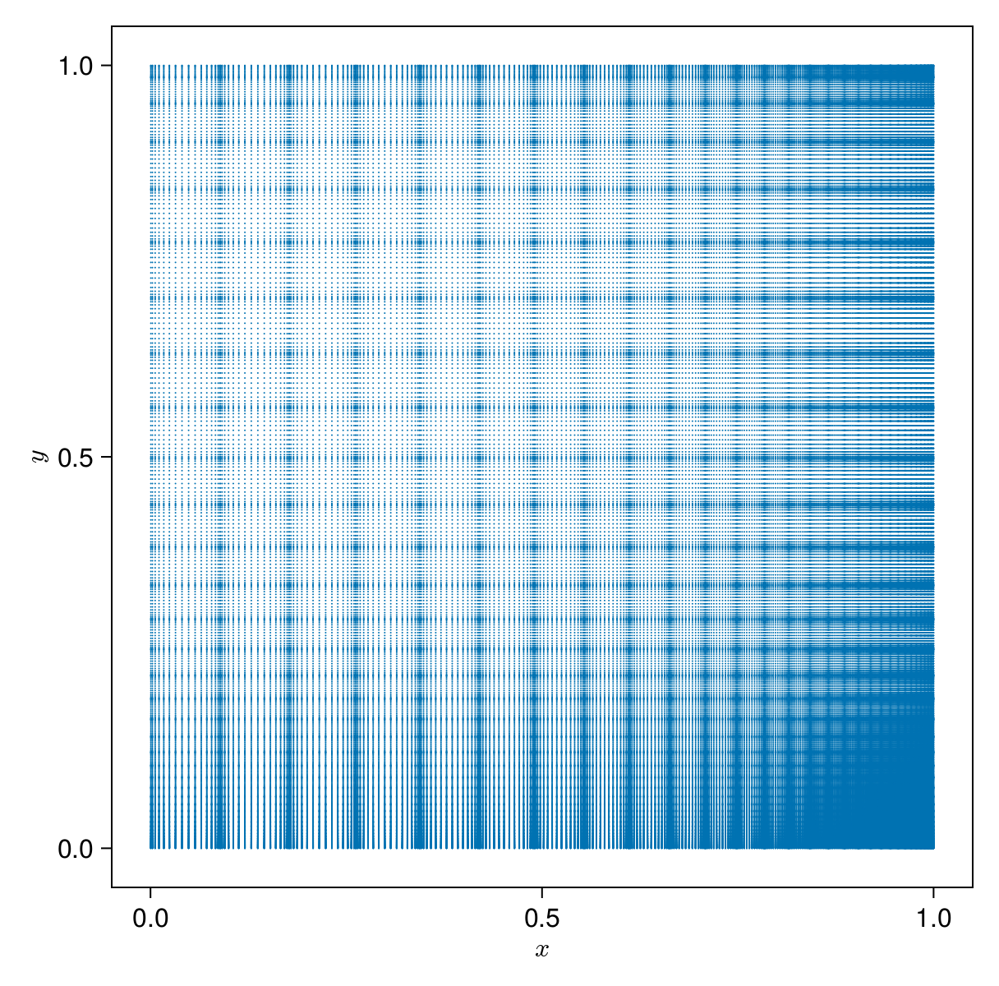
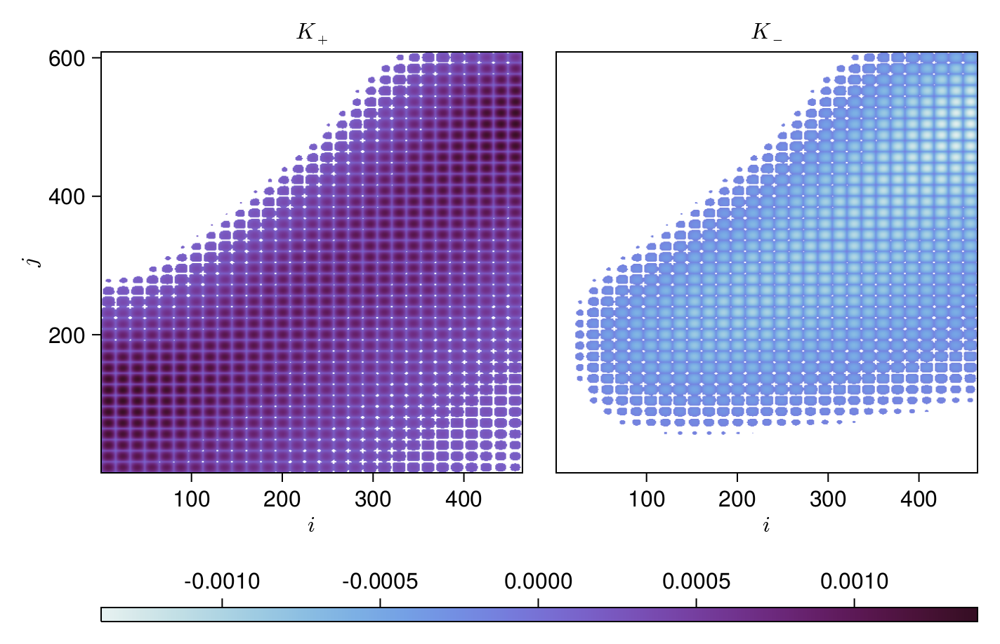

Example usage and detailed explanation
We will explain the inner workings of SparseIR.jl by means of an example use case, adapted from the sparse-ir paper.
Problem statement
Let us perform self-consistent second-order perturbation theory for the single impurity Anderson model at finite temperature. Its Hamiltonian is given by
\[ H = U c^\dagger_\uparrow c^\dagger_\downarrow c_\downarrow c_\uparrow + \sum_{p\sigma} \big(V_{p\sigma} f_{p\sigma}^\dagger c_\sigma + V_{p\sigma}^* c_\sigma^\dagger c_\sigma^\dagger\big) + \sum_{p\sigma} \epsilon_{p} f_{p\sigma}^\dagger f_{p\sigma}\]
where $U$ is the electron interaction strength, $c_\sigma$ annihilates an electron on the impurity, $f_{p\sigma}$ annihilates an electron in the bath, $\dagger$ denotes the Hermitian conjugate, $p\in\mathbb R$ is bath momentum, and $\sigma\in\{\uparrow, \downarrow\}$ is spin. The hybridization strength $V_{p\sigma}$ and bath energies $\epsilon_p$ are chosen such that the non-interacting density of states is semi-elliptic with a half-bandwidth of one, $\rho_0(\omega) = \frac2\pi\sqrt{1-\omega^2}$, $U=1.2$, $\beta=10$, and the system is assumed to be half-filled.
Treatment
We first import SparseIR and construct an appropriate basis ($\omega_\mathrm{max} = 8$ should be more than enough for this example):
julia> using SparseIR
julia> basis = FiniteTempBasis(fermion, 10, 8)
FiniteTempBasis{LogisticKernel, Float64}(fermion, 10.0, 8.0)There's quite a lot happening behind the scenes in this first innocuous-looking statement, so let's break it down: Because we did not specify otherwise, the constructor chose the analytic continuation kernel for fermions, LogisticKernel(80.0), defined by
\[\begin{equation} K(x, y) = \frac{e^{-Λ y (x + 1) / 2}}{1 + e^{-Λ y}}, \end{equation}\]
for us, where 80.0 is the value of the scale parameter $\Lambda = \beta\omega_\mathrm{max}$, shown below.
SVE
Central is the singular value expansion's (SVE) computation, which is handled by the function SVEResult: Its purpose is constructing the decomposition
\[\begin{equation}\label{SVE} K(x, y) \approx \sum_{\ell = 0}^L U_\ell(x) S_\ell V_\ell(y) \end{equation}\]
where $U_\ell(x)$ and $V_\ell(y)$ are called $K$'s left and right singular functions respectively and $S_\ell$ are its singular values. The singular functions are form an orthonormal basis by construction, i.e.
\[\begin{equation} \int \dd{x} U_\ell(x) U_{\ell'}(x) = \delta_{\ell\ell'} = \int \dd{y} V_\ell(y) V_{\ell'}(y). \end{equation}\]
and thus
\[\begin{equation} \label{coeff1} \left. \begin{aligned} S_\ell U_\ell(x) &= \int \dd{y} K(x, y) V_\ell(y) \\ S_\ell V_\ell(y) &= \int \dd{x} K(x, y) U_\ell(x) \end{aligned} \right\} \end{equation}\]
Here and in what follows, unless otherwise indicated, integrals are taken to be over the interval $[-1,1]$.
The function first calls the
choose_accuracyhelper and thereby sets the appropriate working precision. Because we did not specify a working accuracy $\varepsilon$, it chooses for us $\varepsilon \approx 2.2 \times 10^{-16}$ and working typeFloat64x2- a 128 bits floating point type provided by the MultiFloats.jl package - because in computing the SVD we incur a precision loss of about half our input bits, leaving us with full double accuracy results only if we use quad precision during the computation.Then - by calling out to the
CentrosymmSVEconstructor - a support grid $\{x_i\} \times \{y_j\}$ the kernel will later be evaluated on is built. Along with these support points weights $\{w_i\}$ and $\{z_j\}$ are computed. These points and weights consist of repeated scaled Gauss integration rules, such that\[\begin{equation} \label{intrules} \int \dd{x} f(x) \approx \sum_i f(x_i) w_i \quad\text{and}\quad \int \dd{y} g(y) \approx \sum_j g(y_j) z_j. \end{equation}\]
To get an idea regarding the distribution of these sampling points, refer to following figure, which shows $\{x_i\} \times \{y_j\}$ for $\Lambda = 80$:

Note The points do not cover $[-1, 1] × [-1, 1]$ but only $[0, 1] × [0, 1]$. This is actually a special case as we exploit the kernel's centrosymmetry, i.e. $K(x, y) = K(-x, -y)$. It is straightforward to show that the left/right singular vectors then can be chosen as either odd or even functions.
Consequentially, they are singular functions of a reduced kernel $K^\mathrm{red}_\pm$ on $[0, 1] × [0, 1]$ that is given as either:
\[\begin{equation} K^\mathrm{red}_\pm(x, y) = K(x, y) \pm K(x, -y) \end{equation}\]
It is these reduced kernels we will actually sample from, gaining a 4-fold speedup in constructing the SVE.

Using the integration rules \eqref{intrules} allows us to approximate \eqref{coeff1} by
\[\begin{equation} \label{coeff2} \left. \begin{aligned} S_\ell U_\ell(x_i) &\approx \sum_j K(x_i, y_j) V_\ell(y_j) z_j &&\forall i \\ S_\ell V_\ell(y_j) &\approx \sum_i K(x_i, y_j) U_\ell(x_i) w_i &&\forall j \end{aligned} \right\} \end{equation}\]
which we now multiply by $\sqrt{w_i}$ and $\sqrt{z_j}$ respectively, yielding
\[\begin{equation} \label{coeff3} \left. \begin{aligned} S_\ell \sqrt{w_i} U_\ell(x_i) &\approx \sum_j \sqrt{w_i} K(x_i, y_j) \sqrt{z_j} \sqrt{z_j} V_\ell(y_j) \\ S_\ell \sqrt{z_j} V_\ell(y_j) &\approx \sum_i \sqrt{w_i} K(x_i, y_j) \sqrt{z_j} \sqrt{w_i} U_\ell(x_i) \end{aligned} \right\} \end{equation}\]
If we now define vectors $\vec u_\ell$, $\vec v_\ell$ and a matrix $K$ with entries $u_{\ell, i} \equiv \sqrt{w_i} U_\ell(x_i)$, $v_{\ell, j} \equiv \sqrt{z_j} V_\ell(y_j)$ and $K_{ij} \equiv \sqrt{w_i} K(x_i, y_j) \sqrt{z_j}$, then
\[\begin{equation} \label{coeff4} \left. \begin{aligned} S_\ell u_{\ell, i} &\approx \sum_j K_{ij} v_{\ell, j} \\ S_\ell v_{\ell, j} &\approx \sum_i K_{ij} u_{\ell, i} \end{aligned} \right\} \end{equation}\]
or
\[\begin{equation} \label{coeff5} \left. \begin{aligned} S_\ell \vec u_\ell &\approx K^\phantom{\mathrm{T}} \vec v_\ell \\ S_\ell \vec v_\ell &\approx K^\mathrm{T} \vec u_\ell. \end{aligned} \right\} \end{equation}\]
Together with the property $\vec u_\ell^\mathrm{T} \vec u_{\ell'} \approx \delta_{\ell\ell'} \approx \vec v_\ell^\mathrm{T} \vec v_{\ell'}$ we have successfully translated the original SVE problem into an SVD, because
\[ K = \sum_\ell S_\ell \vec u_\ell \vec v_\ell^\mathrm{T}.\]
The next step is calling the
matricesfunction which computes the matrix $K$ derived in the previous step.Note The function is named in the plural because in the centrosymmetric case it actually returns two matrices $K_+$ and $K_-$, one for the even and one for the odd kernel. These matrices' SVDs are later concatenated, so for simplicity, we will refer to $K$ from here on out.
Info Special care is taken here to avoid FP-arithmetic cancellation around $x = -1$ and $x = +1$.
 Note that in the plot, the matrices are rotated 90 degrees to the left to make the connection with the (subregion $[0, 1] × [0, 1]$ of the) previous figure more obvious. Thus we can see how the choice of sampling points has magnified and brought to the matrices' centers the regions of interest. Furthermore, elements with absolute values smaller than $10\%$ of the maximum have been omitted to emphasize the structure; this should however not be taken to mean that there is any sparsity to speak of we could exploit in the next step.
Take the truncated singular value decompostion (TSVD) of $K$, or rather, of $K_+$ and $K_-$. We use here a custom TSVD routine written by Markus Wallerberger which combines a homemade rank-revealing QR decomposition with
GenericLinearAlgebra.svd!. This is necessary because there is currently no TSVD for arbitrary types available.Via the function
truncate, we throw away superfluous terms in our expansion. More specifically, we choose $L$ in \eqref{SVE} such that $S_\ell / S_0 > \varepsilon$ for all $\ell \leq L$. Here $\varepsilon$ is our selected precision, in our case it's equal to the double precision machine epsilon, $2^{-52} \approx 2.22 \times 10^{-16}$.